A complete redesign and front-end implementation of the TU Chemnitz VSR professorship pages, improving readability, consistency, and usability within a legacy university CMS environment.
View case study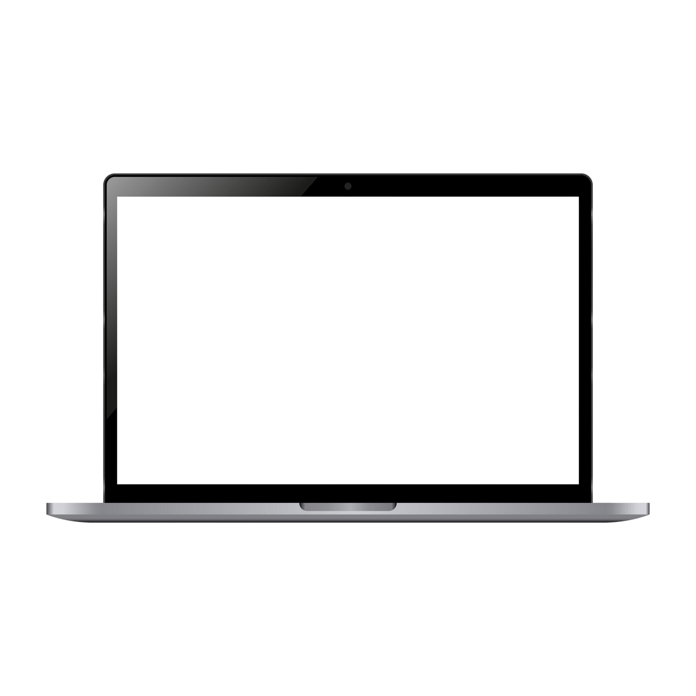
The VSR professorship pages at TU Chemnitz were built on an outdated university-wide template that limited layout flexibility, visual hierarchy, and interaction patterns. Over time, the pages became text-heavy, visually inconsistent, and difficult for students and external visitors to scan efficiently.
Key information such as contact details, course guidance, exam procedures, and research resources was buried in long paragraphs, low-quality images, and unstructured lists. Important steps were often explained only through dense text or large screenshots, making the content feel overwhelming rather than supportive.
Because the professorship was required to follow TU Chemnitz’s global CMS structure, neither the overall layout nor the wording of the content could be changed. The challenge was therefore to significantly improve clarity, readability, and usability within strict technical and institutional constraints.
The primary users were students who regularly visited education, exams, guidelines, and FAQ pages to find clear instructions quickly. Secondary users included prospective students, research partners, and university staff who needed reliable contact and location information.
Their main need was simple: fast, scannable access to the right information without reading long paragraphs. Many pages were accessed under time pressure, especially before exams or during course planning.
The redesign took place within the TU Chemnitz university CMS, which imposed strict layout, branding, and structural limitations.
The university-wide structure and navigation could not be changed.
Only specific content regions inside the CMS were customizable.
Academic text and official wording had to remain unchanged.
Existing XML structures and older workflows needed to stay compatible.
Visual alignment with TU Chemnitz branding was required.
Solutions had to remain sustainable for long-term university use.
As a result, the focus was on improving usability through visual hierarchy, spacing, grouping, and interaction patterns rather than changing content or layout foundations.
Although the VSR professorship pages contained valuable academic information, the way this content was presented created significant usability challenges. Over time, the pages had evolved without a consistent visual or structural system, forcing users to read large amounts of text to locate even basic information.
Most pages relied on long, uninterrupted paragraphs with minimal visual separation. Headings were not clearly differentiated from body text, and related information was rarely grouped together.
Icons varied in style, colors were used without a clear system, and images differed widely in quality and resolution. This inconsistency reduced clarity and weakened the professional appearance of the professorship pages.
Important actions and instructions were often embedded inside dense paragraphs. Step-based processes were presented as continuous text, and large screenshots were displayed inline by default, creating visual clutter and increasing cognitive load.
Outdated banners, low-resolution diagrams, and old campus maps negatively affected how the pages were perceived. Even though the content itself was reliable, the visual presentation reduced trust and engagement.
These issues were particularly impactful for students, who often accessed the pages under time pressure. Poor scannability and visual overload directly affected their ability to prepare, plan, and make informed decisions efficiently.
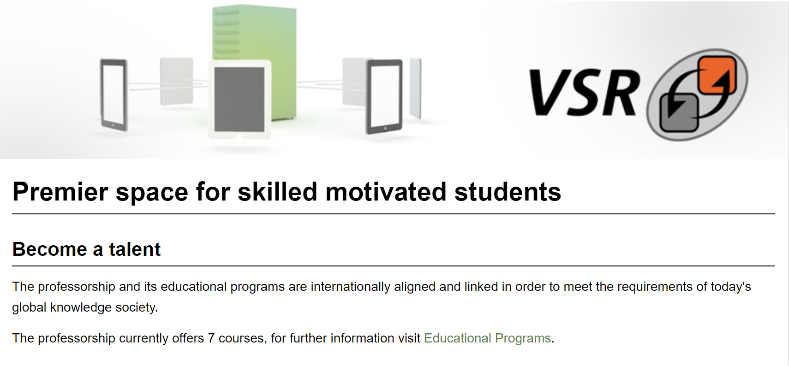
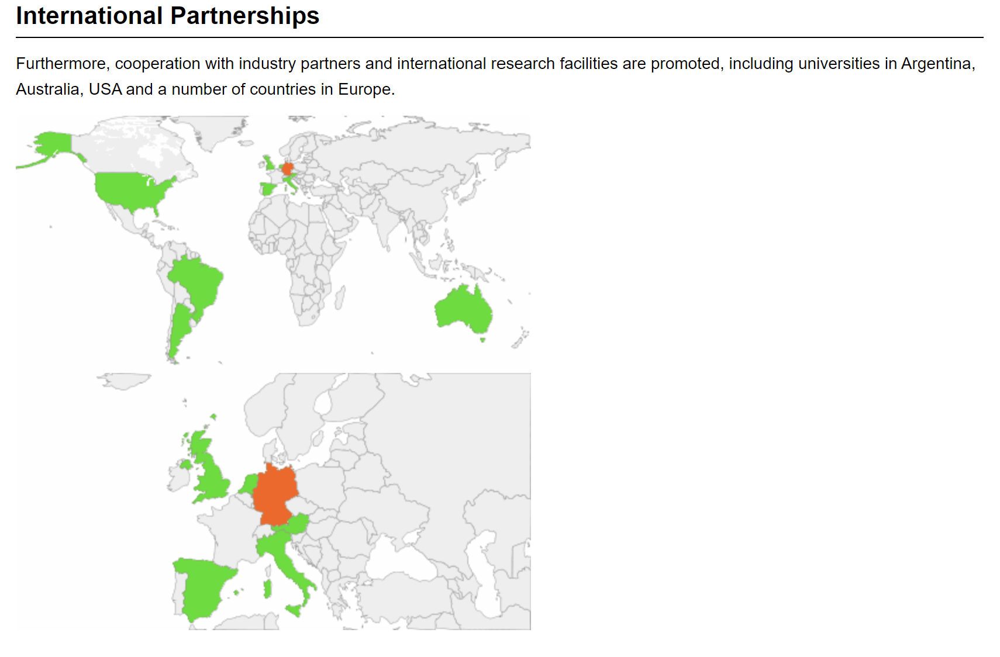
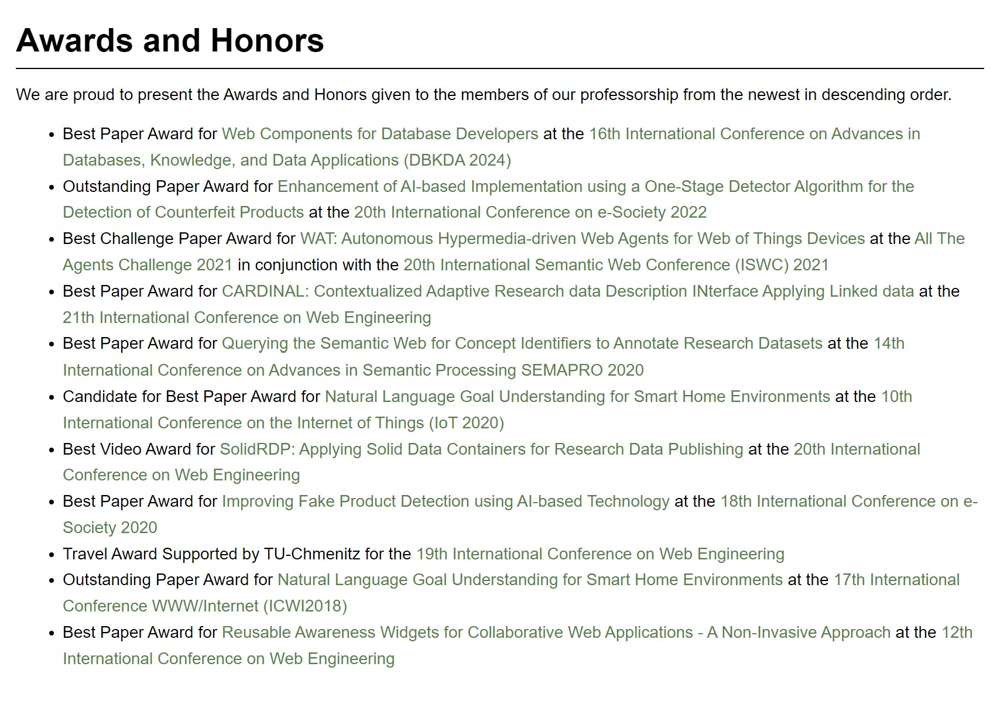
Based on the identified usability issues and institutional constraints, the redesign focused on improving how information is structured, accessed, and perceived rather than changing the content itself.
Given the fixed university-wide template, the redesign followed a structure-first UX approach. Instead of attempting a full visual overhaul, the focus was placed on how users scan, navigate, and complete tasks on information-heavy pages.
A major part of the redesign focused on reorganizing information visually so students and visitors could understand each page quickly and move directly to what they need.
To modernize the VSR pages within the fixed TU Chemnitz CMS layout, I created a lightweight visual system that improves consistency, hierarchy, and perceived quality without changing the underlying structure.
I aligned the redesign with the university’s global header by using TU Chemnitz green for structure and navigation-related elements, while using the VSR signature orange for emphasis and key highlights. This kept the pages visually integrated with the university platform while giving the professorship a recognizable identity.
Since text could not be rewritten, readability improvements came from hierarchy: clearer headings, more spacing between sections, and stronger grouping. The goal was to help users scan first, then read only what is relevant.
I introduced consistent patterns across pages, such as section blocks, card-like groupings, and clear call-to-action links. Using repeatable layouts reduced cognitive load because users could predict where to find information on different pages.
Instead of redesigning isolated screens, the focus was on applying the visual system consistently across the most frequently used VSR pages. Priority was given to pages where students experienced the highest friction and time pressure.
The legacy contact page presented information as a long list, making it difficult to distinguish roles and find the right person quickly.
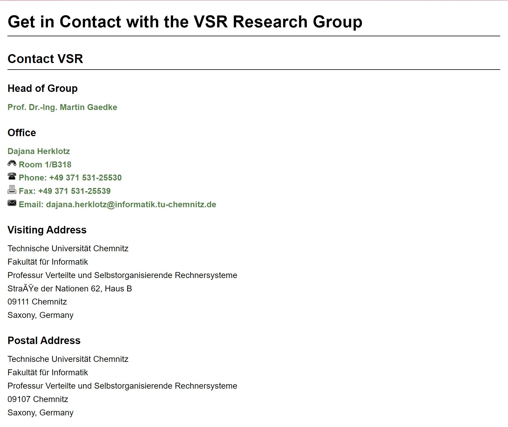
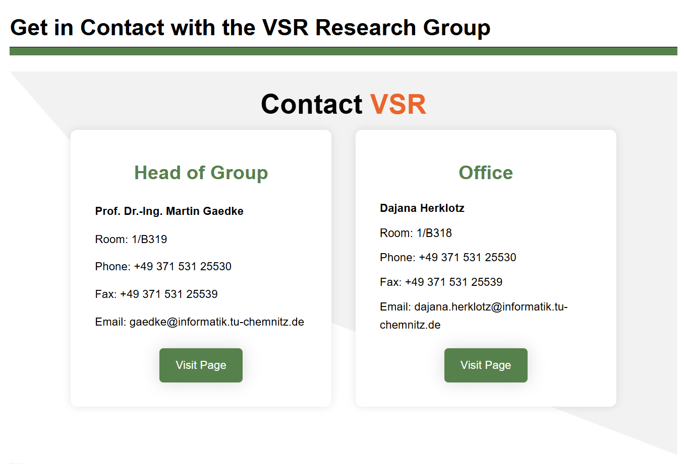
The original “Visiting us” page relied on a low-resolution map and unstructured travel information, which made orientation difficult for external visitors.
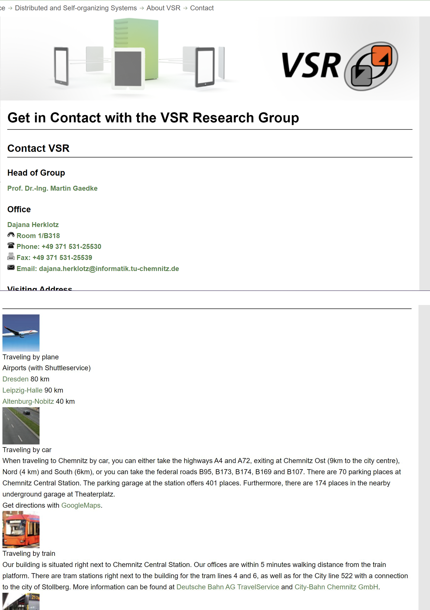
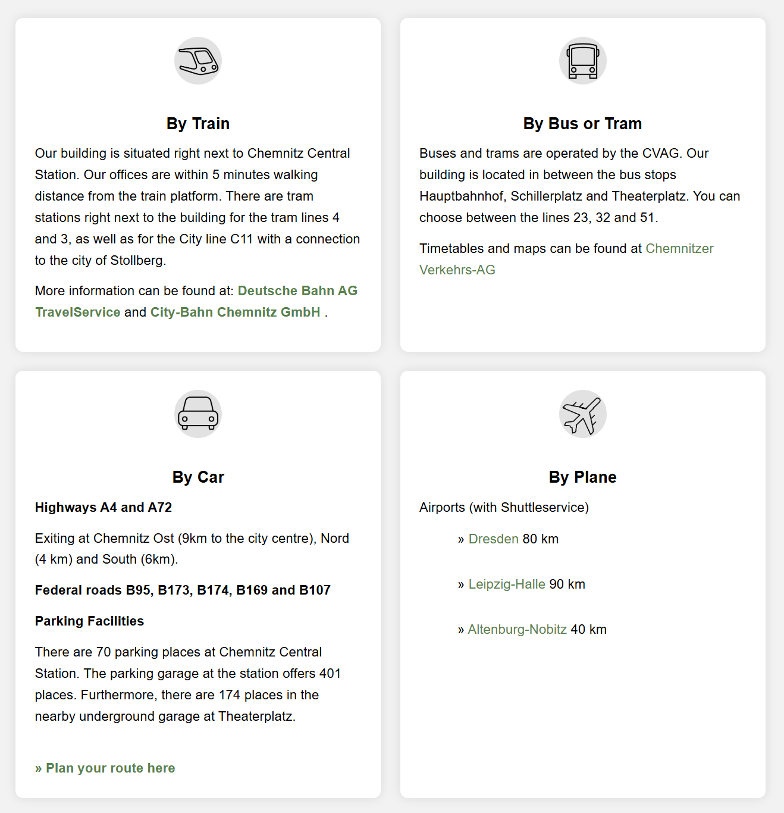
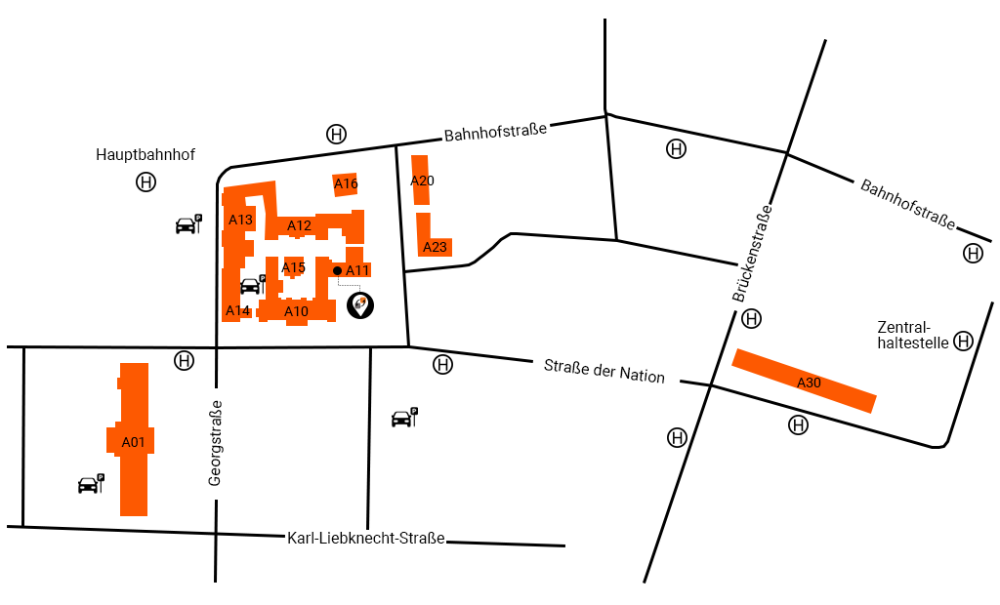
Previously, the education page consisted almost entirely of text with outdated icons and no visual entry points.
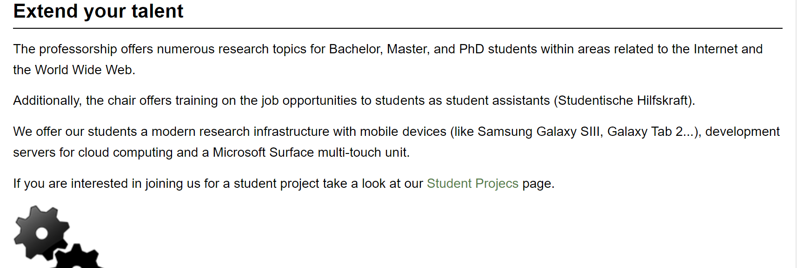
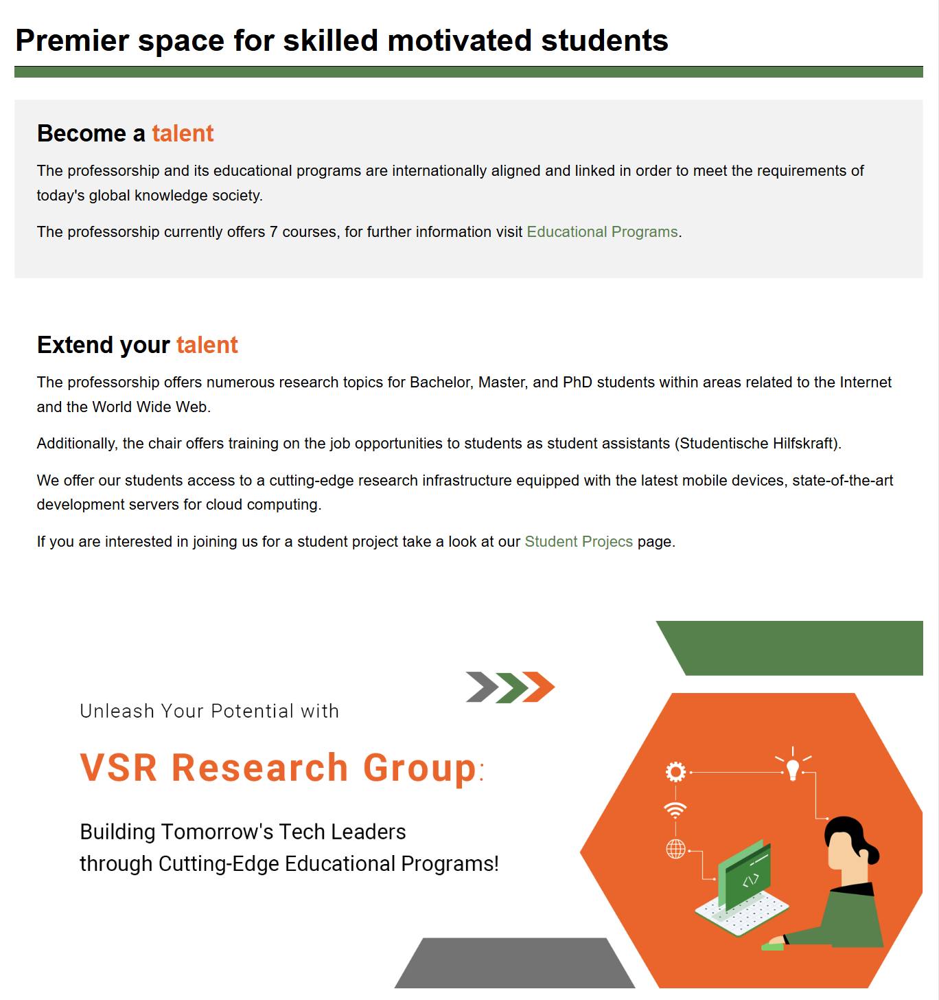
To support faster scanning and visual consistency across education and student project pages, I designed a unified icon system for VSR courses and project categories. The icons fit seamlessly into the fixed TU Chemnitz CMS layout.
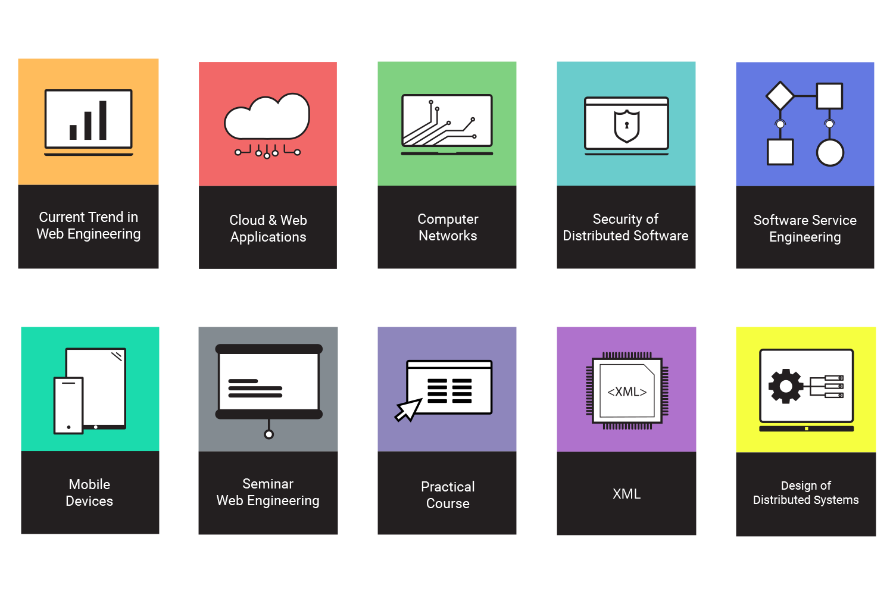
I also designed additional icons for student projects and research-related pages. The goal was to make different project categories easier to recognize while keeping the icon style consistent with the wider VSR visual system.
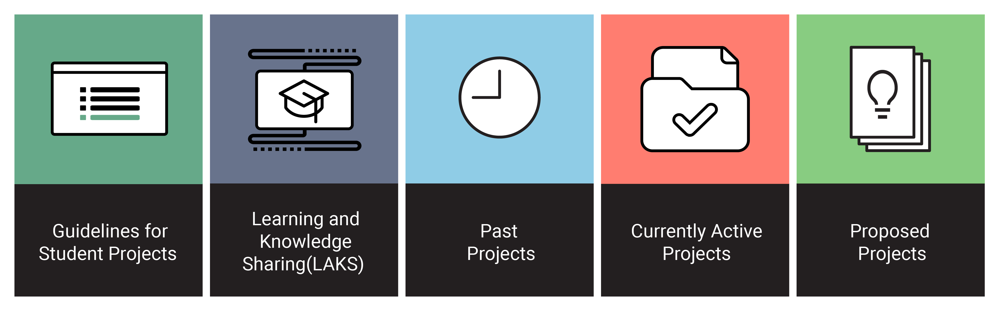
Beyond the website redesign, I also created supporting visual assets for teaching, communication, and presentation materials. These assets helped create a more consistent visual identity across VSR courses, project pages, video content, and internal presentation formats.
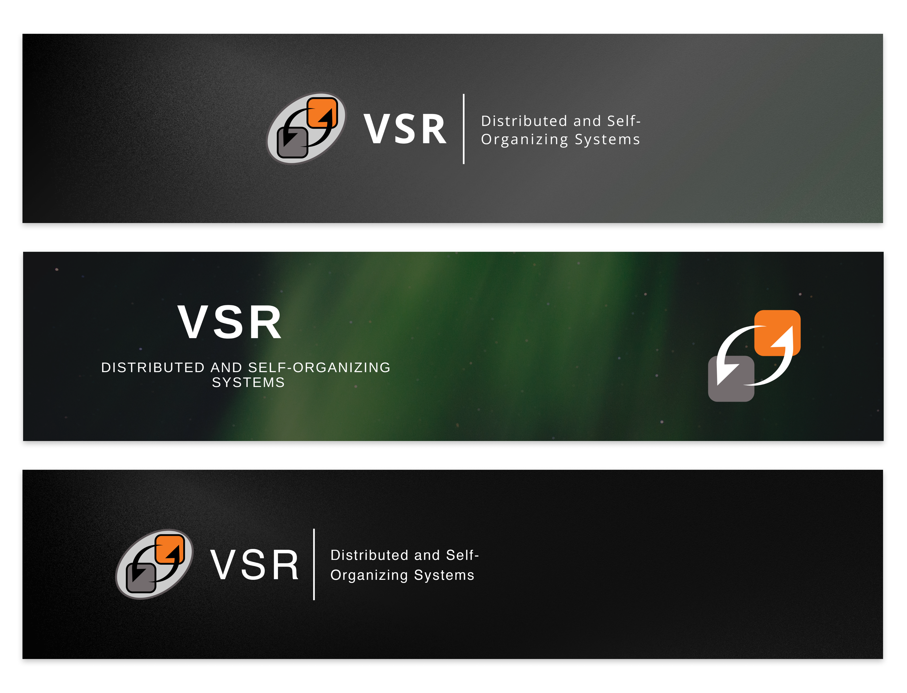
In addition to the website redesign, I updated and redesigned visual materials for VSR teaching content across multiple subjects. This included presentation templates, diagrams, banners, icons, and slide visuals used in lecture and course material.
For each subject, around 100 pages of teaching material were visually updated. The goal was to improve readability, modernize the presentation style, and create a more consistent visual identity across VSR course materials.
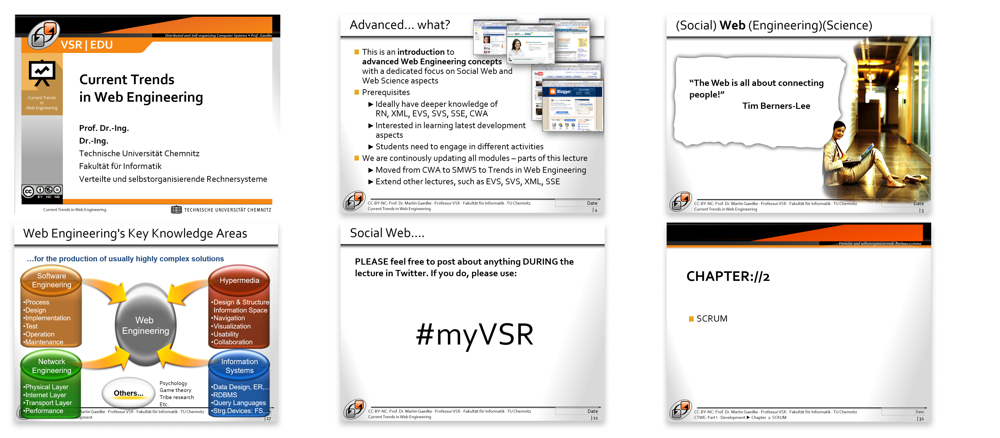
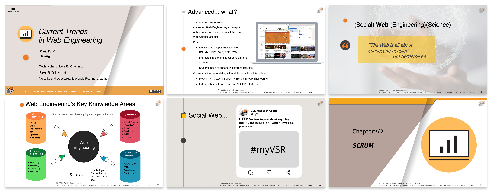
On FAQ and exam-related pages, step-by-step instructions were previously displayed as dense text accompanied by large inline screenshots. This created visual clutter and made it difficult to focus on individual steps.
To address this, I introduced a progressive disclosure interaction that reveals screenshots only when users actively request them.
In addition to the visual redesign, I implemented the redesigned pages directly inside the TU Chemnitz CMS environment using front-end and legacy-system workflows.
Implemented redesigned production pages and structured layouts.
Created responsive layouts, hierarchy systems, and reusable patterns.
Built interactive behaviors and progressive disclosure patterns.
Worked with XML-based legacy content structures inside the CMS.
Managed implementation and collaboration workflows.
Supported parts of the system connected to existing backend structures.
The redesign significantly improved the clarity, consistency, and usability of the VSR professorship pages while fully respecting the technical and institutional constraints of the TU Chemnitz platform.
Improved readability across content-heavy academic pages through clearer hierarchy, spacing, and structured layouts.
Reduced visual clutter by introducing reusable UI structures and consistent interaction patterns.
Created a unified visual language across VSR pages, icons, maps, banners, and educational materials.
Redesigned and updated thousand of educational and presentation pages across multiple VSR subjects.
Designed custom icons, illustrations, teaser videos, presentation templates, and supporting visuals.
Improved navigation and task completion for students across FAQ, exam, and onboarding pages.
Implemented redesigned pages directly in production using HTML, CSS, JavaScript, XML systems, and legacy workflows.
Worked with GitLab, SVN, and legacy CMS environments while maintaining consistency and maintainability.
Contributed to conference and research websites covering both UI/UX design and front-end implementation.
Modernized the overall digital presence of the professorship across websites and teaching materials.
Although no formal usability testing was conducted, feedback from students and staff indicated that information became easier to find and pages felt significantly clearer, more modern, and better structured than before.
The redesign has been fully implemented and continues to be actively used by students and staff as part of the TU Chemnitz website ecosystem.